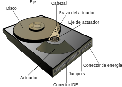
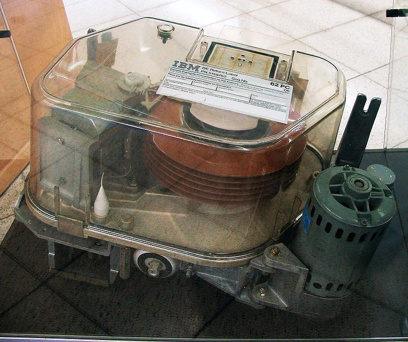
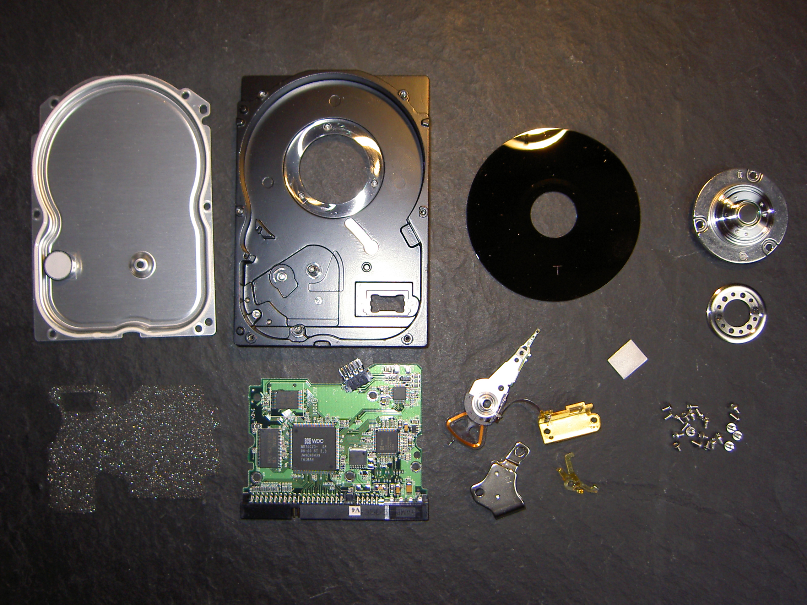
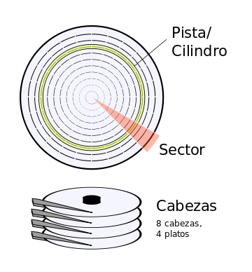
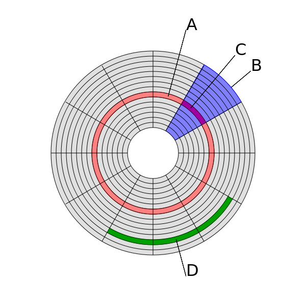

Para otros usos de este término, véase HD.

En informática, la unidad de disco duro o unidad de disco rígido (en inglés: hard disk drive, HDD) es un dispositivo de almacenamiento de datos que emplea un sistema de grabación magnética para almacenar y recuperar archivos digitales. Se compone de uno o más platos o discos rígidos, recubiertos con material magnético y unidos por un mismo eje que gira a gran velocidad dentro de una caja metálica sellada. Sobre cada plato, y en cada una de sus caras, se sitúa un cabezal de lectura/escritura que flota sobre una delgada lámina de aire generada por la rotación de los discos.1 Permite el acceso aleatorio a los datos, lo que significa que los bloques de datos se pueden almacenar o recuperar en cualquier orden y no solo de forma secuencial. Las unidades de disco duro son un tipo de memoria no volátil, que retienen los datos almacenados incluso cuando están apagados. 2 3 4
El primer disco duro fue inventado por IBM, en 19565. A lo largo de los años, han disminuido los precios de los discos duros, al mismo tiempo que han multiplicado su capacidad, siendo la principal opción de almacenamiento secundario para computadoras personales, desde su aparición en los años 1960.6 Los discos duros han mantenido su posición dominante gracias a los constantes incrementos en la densidad de grabación, que se ha mantenido a la par de las necesidades de almacenamiento secundario.6
Mejorados continuamente, los discos duros han mantenido esta posición en la era moderna de los servidores y las computadoras personales. Más de 224 compañías han fabricado unidades de disco duro históricamente, aunque después de una extensa consolidación de la industria, la mayoría de las unidades son fabricadas por Seagate, Toshiba y Western Digital. Los discos duros dominan el volumen de almacenamiento producido (exabytes por año) para servidores. Aunque la producción está creciendo lentamente, los ingresos por ventas y los envíos de unidades están disminuyendo debido a que las unidades de estado sólido (SSD) tienen mayores tasas de transferencia de datos, mayor densidad de almacenamiento de área, mejor confiabilidad 7, y tiempos de acceso y latencia mucho más bajos.891011
Los ingresos por SSD, la mayoría de los cuales utilizan NAND, exceden ligeramente los de los HDD.12 Aunque los SSD tienen un costo por bit casi 10 veces mayor, están reemplazando a los discos duros en aplicaciones donde la velocidad, el consumo de energía, el tamaño pequeño y la durabilidad son importantes.10 11
Los tamaños también han variado mucho, desde los primeros discos IBM hasta los formatos estandarizados actualmente: 3,5 pulgadas los modelos para PC y servidores, y 2,5 pulgadas los modelos para dispositivos portátiles. Todos se comunican con la computadora a través del controlador de disco, empleando una interfaz estandarizada. Los más comunes hasta los años 2000 han sido IDE (también llamado ATA o PATA), SCSI/SAS (generalmente usado en servidores y estaciones de trabajo). Desde el 2000 en adelante ha ido masificándose el uso de los SATA. Existe además los discos de canal de fibra (FC), empleados exclusivamente en servidores. Las unidades externas se conectan principalmente por USB.
Para poder utilizar un disco duro, un sistema operativo debe aplicar un formato de bajo nivel que defina una o más particiones. La operación de formateo requiere el uso de una fracción del espacio disponible en el disco, que dependerá del sistema de archivos o formato empleado. Además, los fabricantes de discos duros, unidades de estado sólido y tarjetas flash miden la capacidad de los mismos usando prefijos del Sistema Internacional, que emplean múltiplos de potencias de 1000 según la normativa IEC e IEEE, en lugar de los prefijos binarios, que emplean múltiplos de potencias de 1024, y son los usados por sistemas operativos de Microsoft. Esto provoca que en algunos sistemas operativos sea representado como múltiplos 1024 o como 1000, y por tanto existan confusiones, por ejemplo un disco duro de 500 GB, en algunos sistemas operativos será representado como 465 GiB (es decir gibibytes; 1 GiB = 1024 MiB) y en otros como 500 GB.
El rendimiento de un disco duro se especifica por el tiempo requerido para mover las cabezas a una pista o cilindro (tiempo de acceso promedio) agregando el tiempo que toma para que el sector deseado se mueva debajo de la cabeza (latencia media , que es una función de la velocidad de rotación física en las revoluciones por minuto) y, finalmente, la velocidad a la que se transmiten los datos (velocidad de datos).

Al principio los discos duros eran extraíbles, sin embargo, hoy en día típicamente vienen todos sellados (a excepción de un hueco de ventilación para filtrar e igualar la presión del aire).
El primer disco duro, aparecido en 1956, fue el Ramac I, presentado con la computadora IBM 350: pesaba una tonelada y su capacidad era de 5 MB. Más grande que un frigorífico actual, este disco duro trabajaba todavía con válvulas de vacío y requería una consola separada para su manejo.
Su gran mérito consistía en que el tiempo requerido para el acceso era relativamente constante entre algunas posiciones de memoria. Este tipo de acceso se conoce como acceso aleatorio. En cambio, en las cintas magnéticas era necesario enrollar y desenrollar los carretes hasta encontrar el dato buscado, teniendo tiempos de acceso muy dispares para cada posición. Este tipo de acceso se conoce como acceso secuencial.
La tecnología inicial aplicada a los discos duros era relativamente simple. Consistía en recubrir con material magnético un disco de metal que era formateado en pistas concéntricas, que luego eran divididas en sectores. El cabezal magnético codificaba información al magnetizar diminutas secciones del disco duro, empleando un código binario de «ceros» y «unos». Los bits o dígitos binarios así grabados pueden permanecer intactos durante años. Originalmente, cada bit tenía una disposición horizontal en la superficie magnética del disco, pero luego se descubrió cómo registrar la información de una manera más compacta.
El mérito del francés Albert Fert y al alemán Peter Grünberg (ambos premio Nobel de Física por sus contribuciones en el campo del almacenamiento magnético) fue el descubrimiento del fenómeno conocido como magnetorresistencia gigante, que permitió construir cabezales de lectura y grabación más sensibles, y compactar más los bits en la superficie del disco duro. De estos descubrimientos, realizados en forma independiente por estos investigadores, se desprendió un crecimiento espectacular en la capacidad de almacenamiento en los discos duros, que se elevó un 60 % anual en la década de 1990.
En 1992, los discos duros de 3,5 pulgadas alojaban 250 MB, mientras que 10 años después habían superado 40 GB (40 960 MB). A la fecha (2017), ya se dispone de en el uso cotidiano con discos duros de más de 5 TB, esto es, 5120 GB (5 242 880 MB).
En 2005 los primeros teléfonos móviles que incluían discos duros fueron presentados por Samsung y Nokia, aunque no tuvieron mucho éxito ya que las memorias flash los acabaron desplazando, debido al aumento de capacidad, mayor resistencia y menor consumo de energía.
Dentro del disco se encuentran:

Dentro de la unidad de disco duro hay uno o varios discos (de aluminio o cristal) concéntricos llamados platos (normalmente entre 2 y 4, aunque pueden ser hasta 6 o 7 según el modelo), y que giran todos a la vez sobre el mismo eje, al que están unidos. El cabezal (dispositivo de lectura y escritura) está formado por un conjunto de brazos paralelos a los platos, alineados verticalmente y que también se desplazan de forma simultánea, en cuya punta están las cabezas de lectura/escritura. Por norma general hay una cabeza de lectura/escritura para cada superficie de cada plato. Los cabezales pueden moverse hacia el interior o el exterior de los platos, lo cual combinado con la rotación de los mismos permite que los cabezales puedan alcanzar cualquier posición de la superficie de los platos.
Cada plato posee dos “ojos”, y es necesaria una cabeza de lectura/escritura para cada cara. Si se observa el esquema Cilindro-Cabeza-Sector, a primera vista se ven 4 brazos, uno para cada plato. En realidad, cada uno de los brazos es doble, y contiene dos cabezas: una para leer la cara superior del plato, y otra para leer la cara inferior. Por tanto, hay ocho cabezas para leer cuatro platos, aunque por cuestiones comerciales, no siempre se usan todas las caras de los discos y existen discos duros con un número impar de cabezas, o con cabezas deshabilitadas. Los cabezales de lectura/escritura no tocan el disco, sino que pasan muy cerca (hasta a 3 nanómetros), debido a una finísima película de aire que se forma entre los cabezales y los platos cuando los discos giran (algunos discos incluyen un sistema que impide que los cabezales pasen por encima de los platos hasta que alcancen una velocidad de giro que garantice la formación de esta película). Si alguna de las cabezas llega a tocar una superficie de un plato, causaría muchos daños en él, rayándolo gravemente, debido a lo rápido que giran los platos (uno de 7200 revoluciones por minuto se mueve a 129 km/h en el borde de un disco de 3,5 pulgadas).
 Hay varios conceptos para referirse a zonas del disco:
 El primer sistema de direccionamiento que se usó fue el Cilindro-Cabezal-Sector (Cylinder-Head-Sector, CHS), ya que con estos tres valores se puede situar un dato cualquiera del disco. Más adelante se creó otro sistema más sencillo, que actualmente se usa: direccionamiento de bloques lógicos (Logical Block Addressing, LBA), que consiste en dividir el disco entero en sectores y asignar a cada uno un único número.